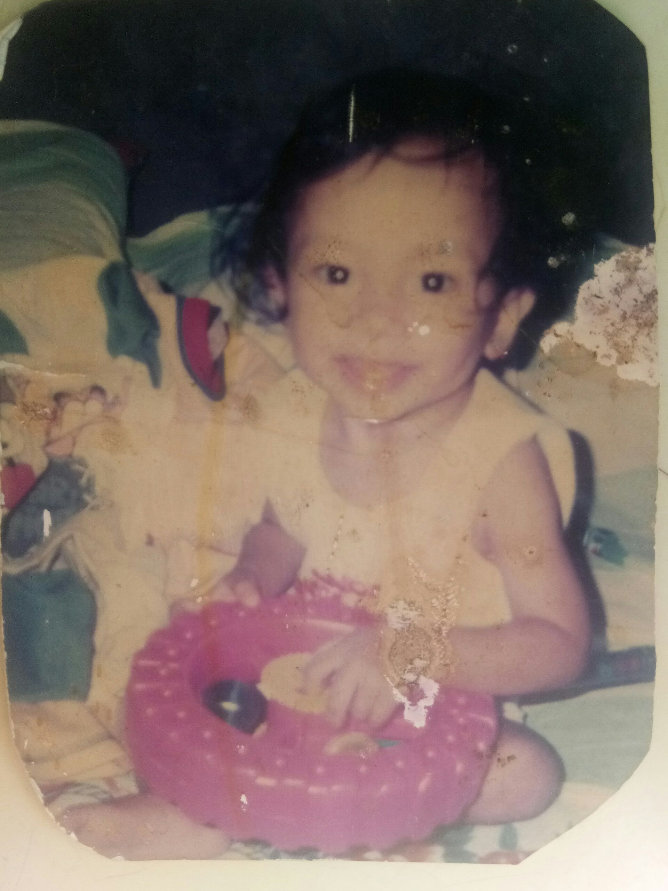

Have you ever wondered what life is like for a person that has VSD (Vascular Septal Defect)? Well if you are, you’re on the right blog. Good day reader! Allow me to introduce myself. My name is John P. Estrada. I was born in 2002, on February 23rd. I reside in the Philippines. I’m currently studying at PUP (Polytechnic University of the Philippines) located at 1016 Anonas, Santa Mesa, Maynila, Kalakhang Maynila. I’m in my second year in college already in the course of DICT (Diploma in Information Communication Technology). Going back, allow me to elucidate VSD. A ventricular septal defect (VSD), a hole in the heart, is a common heart defect that's present at birth (congenital). The hole (defect) occurs in the wall (septum) that separates the heart's lower chambers (ventricles) and allows blood to pass from the left to the right side of the heart. Since before, I was always joyful. Despite the condition of my heart, I was always positive that a time will come that God will heal me. Everything was normal for me. I still played like how a normal kid would do and enjoyed every moment that I encounter.
Moving forward, when I was in elementary. Since I come from a very humble family, we couldn’t afford to undergo my heart surgery for the reason that it costs millions. But of course, despite our financial struggle, my mother really wanted to find a way so that I could undergo my heart surgery. That is why she started to run errands. My mother desperately came to different hospitals to find sponsorship for my surgery. Then after a long, she finally found someone that could shoulder the expenses. But unfortunately, not all of the payments will be sponsored. We still have to pay a down payment that costs P 100’000. After that, my mother was very dismayed since she really committed herself to look for sponsorship, but we still couldn’t afford much money to pay for the down payment. As a result, she was discouraged. I couldn’t blame my mother because I saw how much hard work she devoted to that. Then years passed, she stopped looking for sponsorships because not only she was discouraged, but also my heart condition wasn’t severe at that time. Therefore, she deferred the errand. Forging ahead to when I was in Senior High, time passed and I started noticing that I get tired easily, and I experienced shortness of breath. That is why after all the postponed search for sponsorship, my mother bravely looked for financial support again. But this time, sheran the errand on Philippine Heart Center which is located in East Avenue, Quezon City, Philippines 1100. Then after a couple of transactions, finally my mother found a sponsor for minor heart surgery. That was my first surgery which happened one year ago. But unfortunately, things didn’t go as planned. There were complications that happened.That is why the first attempt to mend my heart failed. But after that, I still believed that God has better plans for me that is why I prayed and trusted His process. One year later, after the recovery from the unsuccessful minor surgery, my heart was ready to undergo once more. But of course, my mother had to look for another sponsor for my operation. And I thank God because she found a full sponsorship for my heart surgery. Right after the papers were settled, we immediately went to Philippine Heart Center. When we arrived at the hospital, we stayed there for almost 1 month. I had a nutritionist for 2 weeks, then in the 3 rd week was the most awaited moment of my life. When the day of the operation came, I didn’t know exactly what to feel. That’s why I just lifted it all to the Lord. I asked Him if he will take me then that’s His will, but of course I begged Him to let me live and survive this operation. It was a very emotional moment for me. I really wanted to overcome because my loved ones are waiting for my return. That’s why when they brought me to the Operating Room, it was a life and death battle. But I just kept on praying. I knew it wasn’t my battle to fight anymore but God’s. After 8 hours of prayers and tears, finally praise God because the surgery was successful. I remembered my mother even got so nervous because it took longer than expected. The Doctor said it would only last about 3-4 hours.

After the operation, I spent 1 week in the hospital until I could recover. For the first 3 days, it was so hard for me. But for the next few days, it got easier until we finally went home. Overall, indeed God has greater plans for me. All I have to do is have faith and believe. Because in accordance to Jeremiah 29:11 ‘’For I know the plans I have for you,” declares the Lord, “plans to prosper you and not to harm you, plans to give you hope and a future’’. Despite all the uncertainties that I had, I still placed my trust in the Lord. That’s why I’m very grateful to Jesus Christ for healing me. To my mother who always supported me, took care of me, and devoted herself to finding sponsorship for my operation, and to all my loved ones who didn’t stop praying for me. Up to this day, I still couldn’t comprehend God’s goodness and faithfulness to me. I owe all of my life to the Lord. That’s why I will live for Him.
©John P. Estrada, DICT 2-2 2021